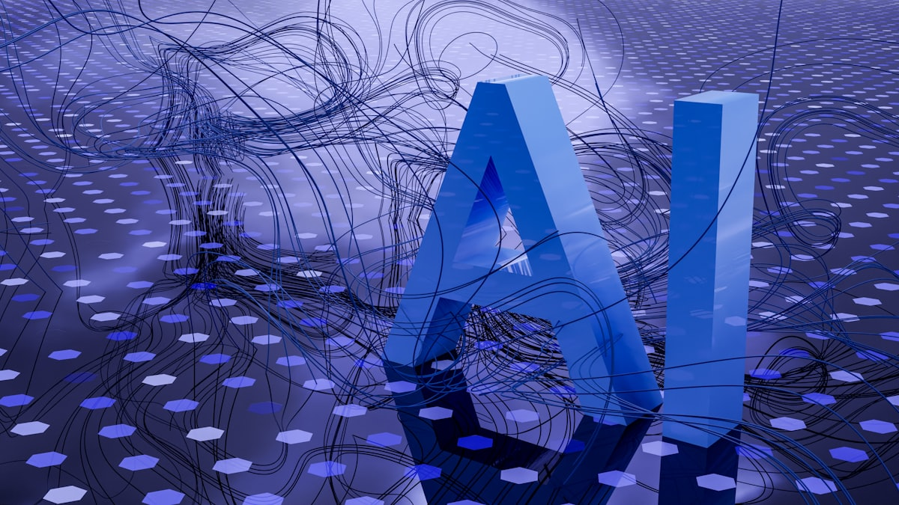

Инструменты для маркетингового ресерча в 2026: что делают руками, а что отдают нейросетям

Вопрос «нейросеть или человек» давно перестал существовать в своём первозданном виде. К 2026 году он звучит иначе: на каком этапе ресерча ИИ добавляет ценность, а где только замедляет и вносит ошибки? Граница существует, и она, к сожалению, неочевидна.
Чего не умеют нейросети в маркетинговом ресерче
Начнём с ограничений, потому что именно завышенные ожидания к автоматизации маркетинга создают проблемы.
Нейросети не чувствуют контекст живого рынка. ChatGPT и аналоги обучены на исторических данных. Исследование целевой аудитории, которую только формирует новый регуляторный или технологический сдвиг, нейросеть проведёт плохо: у неё нет актуальных сигналов. Маркетолог, читающий свежие ветки в Telegram или отзывы на маркетплейсах, обнаружит паттерн раньше.
Нейросети галлюцинируют в специфических нишах. Чем уже ниша, тем выше вероятность, что модель выдаст правдоподобно звучащую, но фактически неверную информацию. Просить GPT собрать маркетинговые исследования по узкому B2B-рынку или по конкретному российскому сегменту — рискованная затея без последующей верификации.
Нейросети не умеют задавать нужные вопросы. Хороший ресерч начинается с формулировки гипотезы. Это интеллектуальная работа, требующая понимания бизнес-контекста, которого у модели нет.
Где нейросети реально экономят время
При чётко поставленной задаче с конкретным входным материалом нейросети работают хорошо.
Транскрипция и синтез интервью. Запись глубинного интервью с клиентом — 40–60 минут аудио. Ручная обработка занимает столько же времени или больше. Whisper (OpenAI) транскрибирует за 2–3 минуты, Claude или ChatGPT извлекают ключевые тезисы за один запрос. Экономия реальная.
Тематическая кластеризация открытых отзывов. Скопировать 200 отзывов с маркетплейса и попросить модель выделить повторяющиеся боли — это работает. Выходит быстро и достаточно точно для первичного анализа.
Генерация вариантов гипотез. После того как маркетолог собрал первичные данные вручную, нейросеть помогает расширить список гипотез, которые стоит проверить. Не заменяет мышление, но расширяет угол обзора.
Перевод и адаптация иностранных исследований. Рынок инструментов маркетинга сосредоточен в англоязычном пространстве. Адаптировать кейс или исследование под российский контекст — задача, с которой современные LLM справляются приемлемо.
Создание скринеров и гайдов для качественных исследований. Составить 15 вопросов для интервью по заданным критериям — хороший способ применить нейросети для маркетинга. Результат нужно редактировать, но базу получаешь за минуты, а не за час.
Инструменты для ручного ресерча: без чего не обойтись
Глубинные интервью. Никакой инструмент маркетинга не заменит прямой разговор с клиентом. Особенно в B2B: здесь решение принимается долго, участвуют несколько людей, а мотивации сложные. Zoom, обычный телефонный звонок, встреча — всё работает. Не работает только пропуск этого этапа.
Анализ поисковых запросов. Яндекс Вордстат и Google Search Console дают прямой доступ к лексике аудитории — словам, которыми люди описывают свои проблемы. Это первичное исследование целевой аудитории, которое многие пропускают в пользу опросов с заданными вариантами ответов.
Парсинг отзывов и форумов. Отзывы на Ozon, Wildberries, 2GIS, ветки на профессиональных форумах — живой голос рынка. Инструменты: Octoparse, ParseHub, или просто ручной сбор с копипастом в таблицу для небольших объёмов.
Анализ рекламных креативов конкурентов. AdHeart показывает, что тестируют конкуренты прямо сейчас. Это не замена полноценного маркетингового исследования, но быстрый индикатор позиционирования.
Конкретный стек: инструменты маркетинга под задачи ресерча
| Задача | Ручной этап | Инструмент / ИИ |
|---|---|---|
| Транскрипция интервью | Проведение интервью | Whisper, Tactiq |
| Анализ отзывов | Отбор релевантных источников | Claude / GPT для кластеризации |
| Поисковый ресерч | Отбор запросов | Яндекс Вордстат, Keys.so |
| Анализ конкурентов | Отбор конкурентов | SimilarWeb, AdHeart |
| Сегментация аудитории | Формулировка гипотез сегментов | GPT для генерации вариантов |
| Создание персон | Синтез данных из интервью | Claude для структурирования |
Как выстроить связку: практический воркфлоу
Шаг 1. Формулировка вопроса. Это только вручную. «Понять аудиторию» — не вопрос. «Почему клиенты из сегмента SMB не продлевают подписку после третьего месяца?» — вопрос.
Шаг 2. Сбор первичных данных. Смешанный этап. Провести 5–8 интервью. Транскрибировать их — Whisper. Выгрузить отзывы — парсер или вручную. Кластеризовать темы — ИИ.
Шаг 3. Верификация. Только вручную. Перепроверить каждый вывод нейросети на соответствие исходным цитатам. Часть тезисов из автоматической обработки будет неточной или слишком обобщённой, проверяйте каждый вывод на соответствие исходным цитатам.
Шаг 4. Синтез и гипотезы. Смешанный этап. Маркетолог формулирует основные выводы, нейросеть помогает расширить список гипотез и обнаружить слепые пятна.
Шаг 5. Документирование. Инструменты: Notion, Miro, Confluence — по вкусу. ИИ может помочь со структурированием и форматированием итогового документа.
Почему автоматизация маркетинга не означает меньше ресерча
Парадокс инструментов состоит в том, что они снижают стоимость отдельных операций, но не снижают суммарный объём необходимого ресерча. Скорее наоборот: когда транскрипция интервью занимает 3 минуты вместо часа, пропадает барьер для проведения большего числа интервью. Команды, которые грамотно используют нейросети для маркетинга, как правило, проводят больше первичного ресерча, а не меньше.
Это хорошая новость для тех, кто боится, что автоматизация упразднит профессию маркетолога-исследователя. Упразднит рутину — но не понимание.
Передайте ресерч по лидам нам
Мы соединяем ручной OSINT и инструменты автоматизации, чтобы находить и квалифицировать ЛПР под ваш продукт. Вы получаете готовый список с контактами.